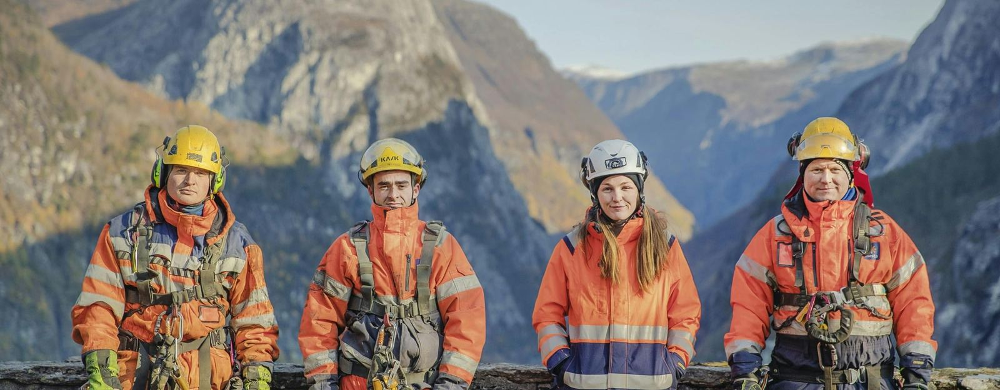
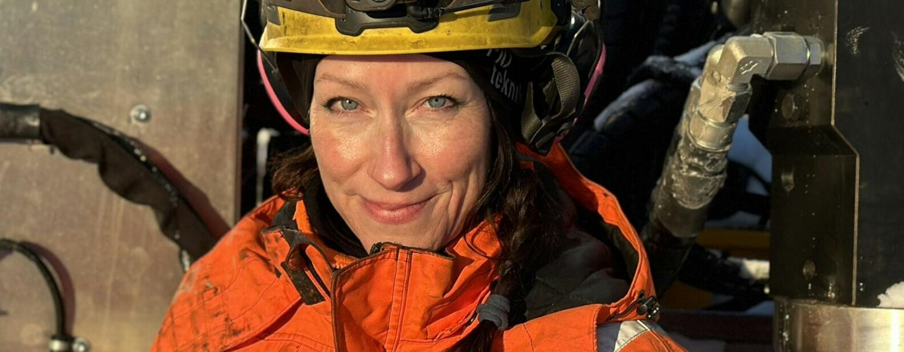
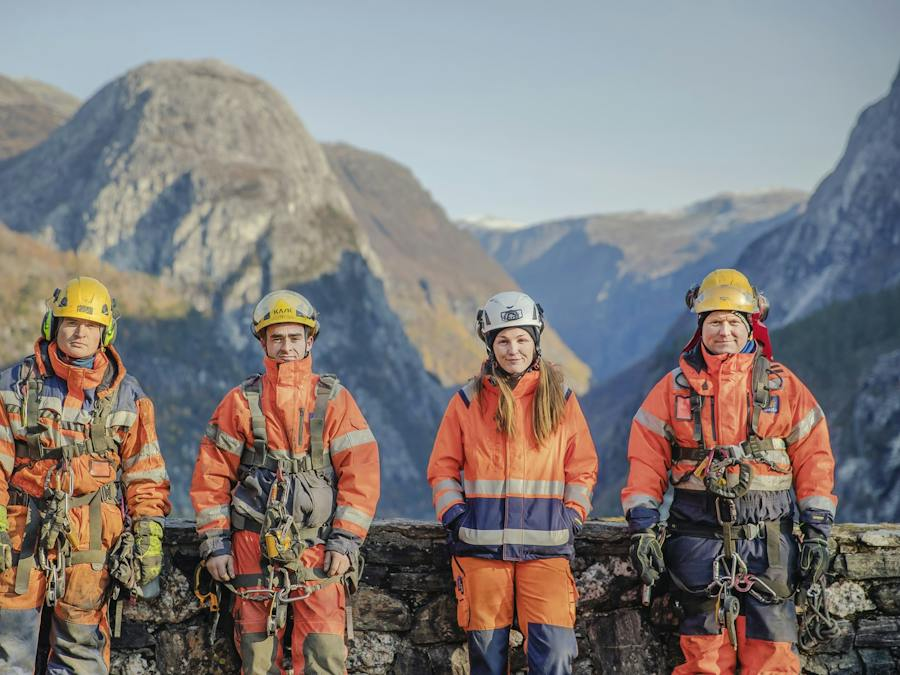

Mesta grunnundersøkelser
Mesta grunnundersøkelser
Mesta Grunnundersøkelser Mesta Grunnundersøkelser tilbyr tjenester til bedrifter og det offentlige. Bestill befaring i dag! Vi har lang erfaring på geoteknikk og utfører en rekke ulike typer oppdrag knyttet til geotekniske og miljøtekniske grunnundersøkelser over hele landet.
Mesta Grunnundersøkelser har stor fleksibilitet, kort leveringstid på feltundersøkelser samt et stort fokus på kundens behov. Mesta har flere nye borerigger med kunnskapsrike og erfarne borreledere og prosjekt-team.
Geotekniske analyser og grundige grunnundersøkelser gir innsikt i jordas egenskaper og geologiske forhold. Vi har profesjonelt samarbeid med gode geotekniske laboratorium og kan tilby leveranse av hele prosessen fra feltundersøkelser, prøvetagning til analyser og ferdig rapport.
Som totalleverandør innenfor geotekniske tjenester kan Mesta Grunnundersøkelser sammen med våre samarbeidspartnere kan vi levere et komplett tilbud med rådgivning, laboratorietjenester og data-/geoteknisk rapportering etter kundens behov.



Kort fortalt: hva trenger du?
Beskriv saken, så svarer vi med hva det krever og hva det koster.